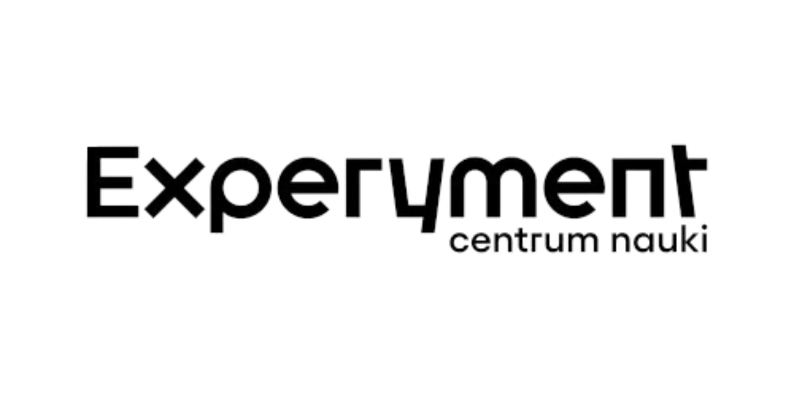

Zamień swój smartfon w detektor promieniowania kosmicznego i pomóż naukowcom odkrywać tajemnice Wszechświata!
Zastanawiałeś się kiedyś, co kryje się w ciemności kosmosu? Aż 95% Wszechświata to wciąż nieodkryta ciemna materia i ciemna energia! Co więcej, naszą planetę nieustannie bombardują niewidzialne cząstki z najdalszych zakątków galaktyki.
Nie musisz lecieć w kosmos ani pracować w tajnym laboratorium, żeby je zbadać. Wystarczy Twój… telefon! Podczas warsztatów CREDO (projektu realizowanego we współpracy z Instytutem Fizyki Jądrowej PAN) udowodnimy Ci, że wielka nauka jest dosłownie na wyciągnięcie ręki. Dołącz do globalnej sieci "nauki obywatelskiej" i stań się prawdziwym łowcą kosmicznych zjawisk.
Masz duszę odkrywcy? Zapraszamy uczniów klas 7–8 szkół podstawowych oraz szkół ponadpodstawowych. Nie wymagamy zaawansowanej wiedzy z fizyki – wystarczy ciekawość, otwarty umysł i chęć rozwiązywania zagadek. To doskonały trening logicznego myślenia i świetny wstęp do świata nauk ścisłych (STEM)!